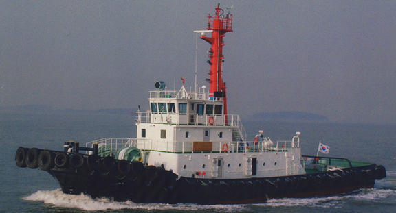

4,500 BHP 267 GRT Harbor Tug Blt 2006 Kr
/ informed by BLUE MARINE CO., LTD.
(18-44)

- BUILT : 15.12.2006 SAM KWANG SHIPBUILDING & ENG. CO., LTD. KOREA
- FLAG/CLASS : KOREA / KR, +KRS1 | TUG BOAT | CLEAN1 | +KRM1
- NAVIGATION AREA : GREAT COASTAL
- LOA/L/B/D : 38.00 / 35.25 / 9.50 / 4.50m
- DWT/draft : 125 DWT / 4.119 m
- GRT/NRT : 267 T / 417 T
- MAIN ENGINE : NIIGATA 6L28HX, 2250hp X 2set (TTL. 4500 BHP)
- AUX ENGINE : DAE WOO 253ps X 1800rpm X 2set
- GENERATOR : DAE WOO AC 176kw X 225V 3 X 60HZ X 2set
- PROPULSION : NIIGATA ZP-31 (4BLADE NOZZLE) X 2set
- SPEED : MAX. 15.85 kt
- NUMBER OF DECK : 3
- COMPLEMENT : 8 CREW
- BOLLARD PULL : 50.98 T / 51.29 T
- TURNING VELOCITY : 30 sec/360degrees/0.002mail
- FIFI SYSTEM : DIESEL ENGINE 285ps X 1800rpm
- LAST/NEXT SS : 2016-10-24 / 2021-12-14
- LAST/NEXT DD : 2016-10-24 / 2019-10-24
- LOCATION : KOREA
Information History
- 180126 : She is available for sale.
- 180116 : She is available for sale.